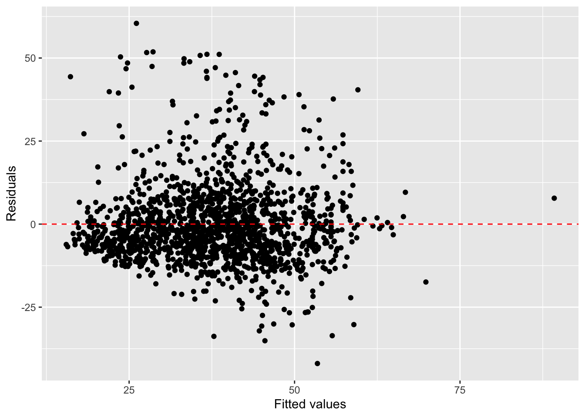

library(tidyverse)
library(broom)
library(gghighlight)Lab 05: Regression
Practice conducting regression analysis in R.
Introduction
This lab will help you practice conducting regression analysis in R. You will be analyzing a dataset called scorecard, which includes information originally obtained from the U.S. Department of Education’s College Scorecard for 1712 colleges and universities during the 2018 - 2019 academic year.
In this lab, you will explore and visualize the data using the tidyverse suite of packages. You’ll use the broom package to tidy regression output and the gghighlight package to highlight data points in a visualization.
Let’s load the packages.
The data
The following code reads in the scorecard data from a .csv file stored in the data folder in your Files tab in Posit Cloud.
scorecard <- read_csv("data/scorecard.csv")In this lab, we will be working with the following variables:
pell_pct- The percentage of students who are elligible for a Pell Grantfirstgen_pct- The percentage of students who are First Generation college studentscost- The cost to attend the institutionsatavg- The average SAT score of admitted students
The Pell Grant is a need-based financial aid grant from the U.S. Department of Education to assist low-income students in paying for college. The percentage of students at an institution who are Pell-elligible can be considered one metric for how accessible an institution is to low-income students.
Visualizing the data
Note: you will likely get a warning message that some rows were removed due to missing values. It’s useful to note when there is missing data, but you can suppress this warning message from showing up in your .html by adding #| warning: false as the first line in your code chunk.
Correlation
After we’ve confirmed visually that two variables have a linear relationship, we can quantify the strength of this linear relationship by computing the correlation.
Note this code uses the same summarize() function you saw in Lab 02, but instead of computing the median or IQR, for example, it instead uses cor() function to compute a different summary statistic (the correlation). Because there are some missing values in the data, the argument use = "complete.obs" is added to tell R to remove missing values (incomplete observations) before computing the correlation.
scorecard |>
summarize(correlation = cor(pell_pct, firstgen_pct,
use = "complete.obs"))# A tibble: 1 × 1
correlation
<dbl>
1 0.627Fitting a linear model
R can very easily find the line of best fit (a.k.a the least squares regression line) for our data using the function lm(), which stand for “linear model”. The general syntax is given by lm(y ~ x, data). We then save the output of lm() into a object name of our choice.
The following code fits a linear regression model with pell_pct as the response variable and firstgen_pct as the explanatory variable, and saves it into an object called model1. Once you run this code chunk, you should see a new object model1 in your Environment. We can view a summary of the model results using the tidy() function.
model1 <- lm(pell_pct ~ firstgen_pct, scorecard)
tidy(model1)# A tibble: 2 × 5
term estimate std.error statistic p.value
<chr> <dbl> <dbl> <dbl> <dbl>
1 (Intercept) 6.92 1.02 6.79 1.61e- 11
2 firstgen_pct 0.967 0.0304 31.9 3.78e-172The estimate column contains the information needed to write out our regression equation. The first row (Intercept) provides the estimate for the intercept, \(b_0\), and the second row firstgen_pct provides the estimate for the slope.
With this table output, we can write out the regression model:
\[\hat{y} = 6.92 + 0.967x\]
\(R^2\)
We can obtain the \(R^2\) value for our model using the glance() function.
glance(model1)[1]# A tibble: 1 × 1
r.squared
<dbl>
1 0.393APU’s data
APU is actually included in this dataset. Let’s extract APU’s data using the following code:
apu <- scorecard |>
filter(name == "Azusa Pacific University")Residual Plot
Rather than having to calculate all the predicted values and residuals by hand for all 1500+ observations, we can use the augment() function.
model1_aug <- augment(model1)After running the above code chunk, check out the new object in your Environment called model1_aug. The first column (.rownames) gives the row number for the corresponding observation in the original data. The next two columns are the y and x variables from the data you used to fit the model. .fitted gives the “fitted” or “predicted” values for each school, based on the regression line you fit, and .resid gives the residuals for each observation. APU has .rownames = 689. Find the fitted value and residual for APU in the model1_aug dataset to verify your answer to Exercise 5.
We can use this new dataframe model1_aug to create a residual plot. Remember residual plots have the predicted (fitted) vales on the x-axis, and the residuals on the y-axis.
ggplot(data = model1_aug, aes(x = .fitted, y = .resid)) +
geom_point() +
geom_hline(yintercept = 0, linetype = "dashed", color = "red") +
labs(x = "Fitted values",
y = "Residuals")
We’re getting a little fancy with the code here. After creating the scatterplot (the ggplot() and geom_point() layers), we add a new layer called geom_hline() to overlay a red horizontal dashed line at y = 0 (to help us check whether the residuals are distributed around 0), and we also rename the axis labels to be more informative by adding a labs() layer.
Fitting other models
An important part of the modeling process in statistics and data science is investigating which variables best explain the response variable of interest. In the next two exercises, you will apply what you’ve learned above to fit two additional models to investigate how useful other variables are in explaining % Pell elligible.